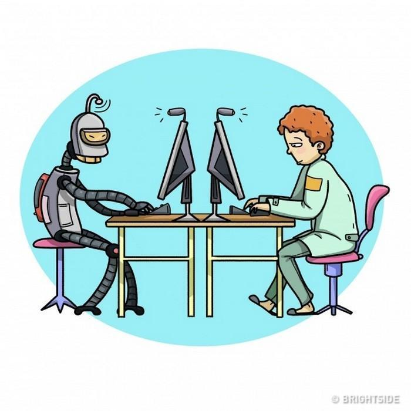

Especialista em tecnologia prevê as mudanças que o mundo sofrerá até 2099
Por Letícia Flores
Atualizado em 5 de Fevereiro de 2018
Comentários
Não é difícil imaginar como a tecnologia pode transformar o mundo em que vivemos hoje. Existem inúmeros filmes, séries, livros e previsões realistas sobre o que nos espera no futuro. O inventor e futurologista Ray Kurzweil tem feito previsões científicas bastante assertivas a respeito disso desde 1990.
Por ser um dos funcionários do Google encarregado de novos projetos que envolvem o aprendizado de máquinas e processamento de dados, o caminho da tecnologia torna-se muito mais evidente diante de seus olhos.
Ele previu a dissolução da União Soviética, a interface de assistentes digitais dos sistemas operacionais de celulares (como a Siri, por exemplo), bem como sistemas de realidade virtual aumentada.
Das 147 previsões feitas em livros publicados nos anos de 1990, 1999 e 2005, 115 concretizaram-se exatamente da maneira como ele descreveu.
Agora, ele faz novos palpites assertivos sobre o que nos espera na Era Digital desde 2019 até 2099. Algumas coisas parecem óbvias; outras, assustadoras. Bora conferir?
2019
- A humanidade vai superar as doenças que matam 95% das pessoas em países civilizados;
- O processo de envelhecimento será abrandado ou até mesmo revertido.
2020
- Os computadores vão diminuir ainda mais e seu formato será bem diferente –alguns serão parte das nossas próprias roupas, por exemplo;
- Um governo do “Novo Mundo” aparecerá para representar toda a humanidade;

- A partir de 2020, novos “corpos humanos 2.0” começarão a aparecer, baseados em nanotecnologias
- As campanhas publicitárias serão transmitidas individualmente a cada pessoa através de canais de áudio.
2025

- Veículos e carros voadores serão 100% controlados por meio de computadores, sem a necessidade de motorista ou de uma tripulação;
- Será o ano da estreia da nanotecnologia ambiciosa que nos ajudará a entender como funciona o cérebro humano.
2027
- A modelagem computadorizada e precisa de partes do cérebro humano será possível;
- No final dos anos 2020, a inteligência artificial será comparável ao cérebro humano por sua capacidade e complexidade.
2029

- A inteligência artificial será capaz de passar pelo teste de Turing (que avalia a capacidade de uma máquina “pensar”), o que provará sua capacidade de pensar como um ser humano;
- A realidade virtual alcançará uma definição tão alta que será difícil distingui-la da realidade física;
- Nanomáquinas serão amplamente utilizadas na Medicina;
- A produção das nanotecnologias se tornará tão frequente que mudará radicalmente a economia mundial;
- Nanorobôs serão capazes de penetrar as células para alimentá-las e evitar desperdícios, de modo que o processo tradicional de alimentação se tornará desnecessário.
Década de 2030
- O upload de mentes será possível;
- As pessoas poderão viver na internet, projetando seus corpos em realidade física e virtual;
- O equipamento de realidade virtual desaparecerá. Nanomáquinas serão implantadas dentro do cérebro, interagindo diretamente com suas células;
- As nanomáquinas em um cérebro humano ajudarão a aumentar as capacidades cognitivas e sensoriais, incluindo a memória.
- As pessoas serão capazes de conectarem-se telepaticamente entre si através de redes sem fio;
- Será possível mudar personalidades e lembranças humanas;
- Aparecerão “Corpos humanos 3.0”, e eles não terão uma forma de corpo específica;
- Os seres humanos serão capazes de mudar o mundo externo quando e como quiserem.
2040
- A inteligência não-biológica vai superar em bilhões de vezes as capacidades de uma bio-inteligência;
- As pessoas passarão a maior parte do tempo na realidade virtual –a Matrix é um exemplo de um mundo virtual;
- Nano robôs serão amplamente utilizados para criar qualquer tipo de forma e superfície.
2045
- Pessoas “atualizadas” e “carregadas” se tornarão uma coisa normal;
- Um computador um bilhão de vezes mais inteligente que todos os seres humanos juntos poderá ser comprado por US$ 1.000;
- A singularidade tecnológica chegará: a inteligência artificial vai superar a dos humanos e se tornará a forma de vida mais inteligente na Terra e isso mudará a história da humanidade para sempre;
- A extinção da humanidade dificilmente será possível, pois não haverá muita diferença entre humanos e máquinas.
De 2045 a 2099
- A Terra se transformará em um gigantesco computador;
- As pessoas que querem manter seus corpos naturais viverão em zonas especiais de reserva;
- A humanidade não será mais limitada pela velocidade da luz;
- A inteligência artificial terá influência em todo o Sistema Solar, alcançando outras galáxias;
- As estrelas, os planetas e os meteoros serão transformados em uma matéria estruturada capaz de sustentar a vida;
Em 2099, as máquinas serão capazes de construir computadores do tamanho dos planetas.
E aí, você já está sentindo as mudanças que a tecnologia promove na nossa rotina? Será que as realidades aparentemente absurdas propostas por séries como Black Mirror já estão acontecendo debaixo do nosso nariz?